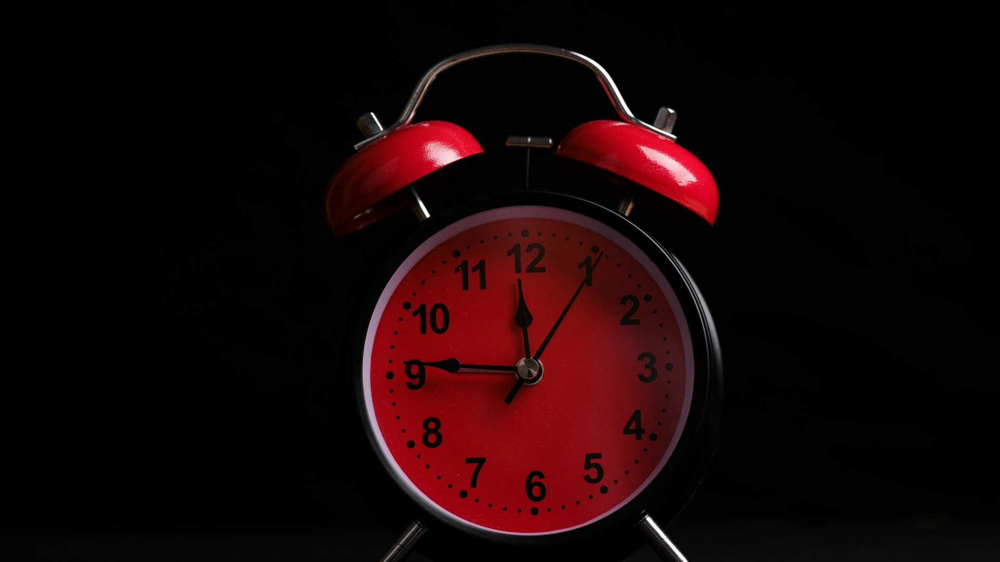
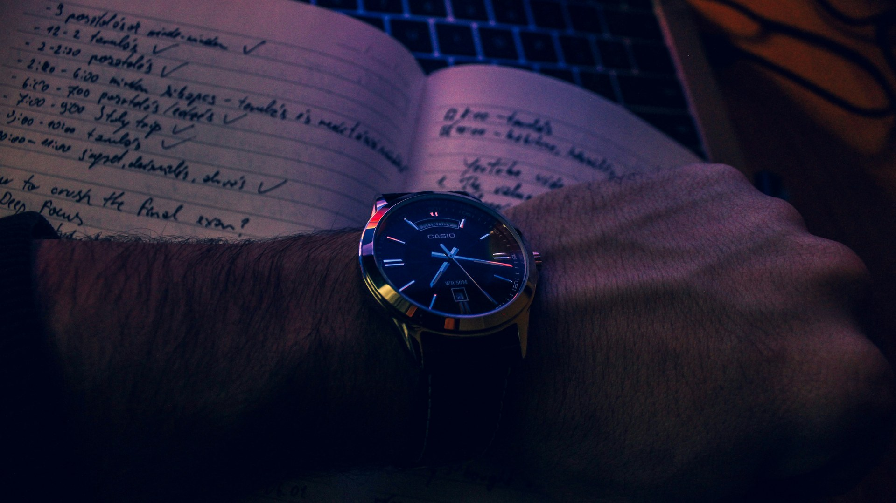
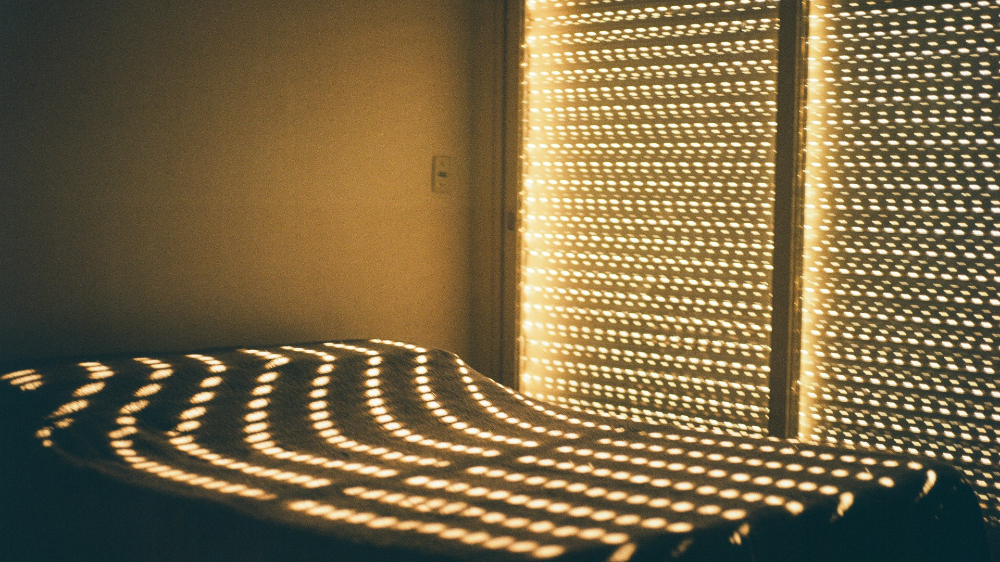
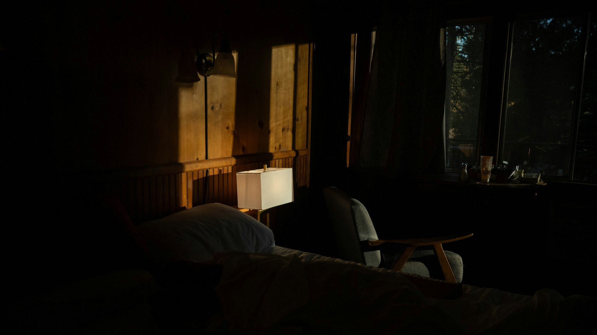
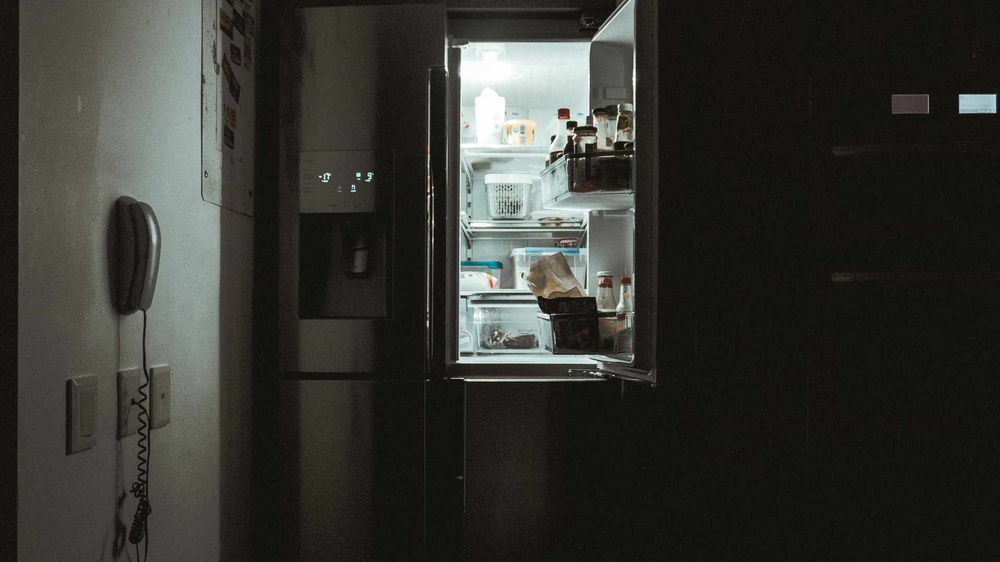

여러분은 평일과 주말에 각각 몇 시에 잠드시나요?
평일에는 억지로 일찍 일어나고, 주말에는 밀린 잠을 보충하느라 점심때까지 자는 분들이 많습니다.
야근이나 회식이 있는 날에는 새벽에 잠들고, 다음 날 중요한 일정이 있으면 평소보다 일찍 일어나기도 합니다.
이렇게 자는 시간이 달라지면 충분히 잤다고 생각해도 계속 피곤할 수 있습니다.
오늘은 직장인에게 필요한 수면 시간, 규칙적 수면의 장점, 불규칙할 때의 문제, 그리고 도움되는 음식·습관을 알아보겠습니다.
우선, 우리는 몇 시에 자야 할까요? 성인은 하루에 최소 7시간 이상의 수면이 필요합니다.
개인차는 있지만 대부분의 성인은 약 7~9시간 정도 잠을 자는 것이 좋고, 절대적인 취침 시간이 정해져 있지는 않습니다.
중요한 건 기상 시간에서 필요한 수면 시간을 거꾸로 계산하는 것입니다. 7시간이면 자정 전, 8시간이면 11시, 9시간이면 10시.
침대에 들어가는 시간이 아니라 실제로 잠드는 시간이 기준이며, 잠들기까지 30분 걸린다면 그만큼 일찍 눕는 게 좋습니다.
수면 시간만큼 중요한 건 매일 비슷한 시간에 자고 일어나는 것입니다.
주말이라고 서너 시간 늦게 자고 일어나면 몸은 매주 작은 시차 적응을 반복하게 됩니다.
주말에도 기상 시간 차이는 한두 시간 이내로 유지하는 것이 좋습니다.
우리 몸에는 24시간 주기의 생체시계가 있고, 빛·어둠·식사·활동·수면 시간의 영향을 받습니다.
매일 비슷하게 자고 일어나면 몸이 리듬을 예측해 밤엔 자연스럽게 졸리고 아침엔 수월하게 깨어납니다.
규칙적인 수면은 낮 동안의 집중력·판단력·기억력·학습에 도움이 됩니다. 실수를 줄이고 빠르게 판단하는 능력이 중요합니다.
감정 조절에도 도움이 됩니다. 잘 잔 날은 차분하지만 부족한 날은 사소한 일에도 예민해지기 쉽습니다.
수면은 신체 회복의 시간이며, 에너지·면역·대사를 조절해 다음 날의 몸과 뇌를 준비시킵니다.
수면이 불규칙하면 생체시계가 혼란스러워지고, 특히 월요일 아침마다 시차가 발생한 것처럼 피곤할 수 있습니다.
가장 먼저 나타나는 문제는 집중력 저하로, 회의 내용을 놓치거나 단순 업무에서도 실수가 늘어납니다.
반응 속도와 판단력이 떨어지므로 운전하거나 기계를 다루는 사람에게는 특히 위험합니다.
감정적으로도 불안·예민해지고 업무 스트레스를 실제보다 크게 느낄 수 있습니다.
잠이 부족하면 식욕 조절에도 영향을 줘 늦은 밤 자극적·단 음식을 찾고 운동 의욕도 떨어집니다.
장기간 반복되면 체중 관리가 어려워지고 우울감·심혈관계 질환 위험과도 연관됩니다.
주말 몰아 자기는 일시적 도움일 뿐, 평일 부족을 완전히 되돌리진 못합니다.
가장 좋은 방법은 보충이 아니라 매일 필요한 수면 시간을 확보하는 것입니다.
Photo: engin akyurt / Unsplash
Photo: iam_os / Unsplash
Photo: Faraaz Zuberi / Unsplash
Photo: Vitaly Gariev / Unsplash
Photo: Jan Kahánek / Unsplash
Photo: Suhas Hanjar / Unsplash
Photo: Shane / Unsplash
Photo: Árpád Czapp / Unsplash
Photo: Lisa Marie Theck / Unsplash
Photo: Ruben Mavarez / Unsplash
Photo: JESHOOTS.COM / Unsplash
Photo: Eric Rothermel / Unsplash
Photo: Leonie Zettl / Unsplash
Photo: Bobby / Unsplash
Photo: Icons8 Team / Unsplash
Photo: Candice Picard / Unsplash
Photo: bruce mars / Unsplash
Photo: Nic Y-C / Unsplash
Photo: Christian Velitchkov / Unsplash
Photo: Charles Postiaux / Unsplash
Photo: Elisa Ventur / Unsplash
Photo: nrd / Unsplash
Photo: Hush Naidoo Jade Photography / Unsplash
Photo: Greg Pappas / Unsplash
Photo: bruce mars / Unsplash